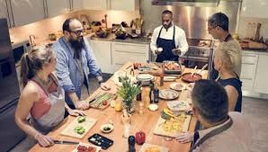
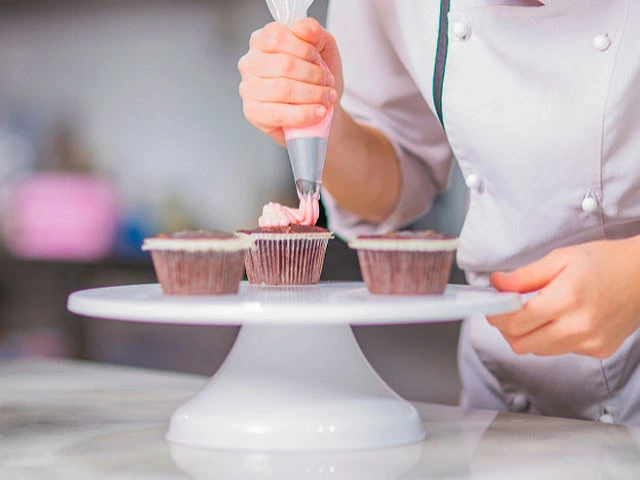
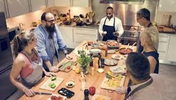
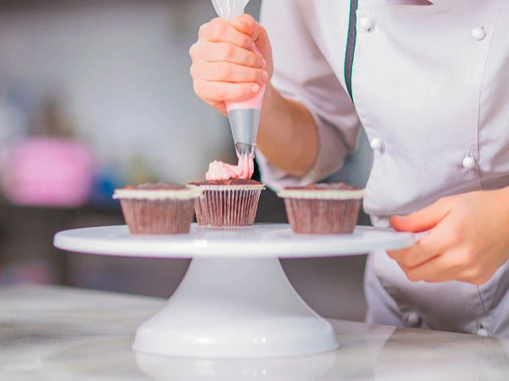

traitor
Cita 1 y Cena, nunca falla
Película en el Cine + Cena
Volvemos a donde todo comenzó... nuestros inicios, siempre dicen que donde has sido feliz, debes volver....


Cita 2: Ruta Especial por Madrid
Como ambos sabemos que decidir cosas nunca ha sido nuestro fuerte... te propongo un día lleno de actividades especiales, recorriendo unos lugares muy chulos de Madrid.
Tenemos que comenzar medio pronto, ya que nos esperan varios planes a los que debemos llegar a todos (lo se... voy tarde a todo, de ahi lo de comenzar pronto jajaja).Empezamos la tarde creando nuestra propia vela, disfrutando de una merienda única, seguimos con un atardecer en el Templo de Debod o Mirador del Palacio Real, y finalizaremos el día con un delicioso postre y una cena de autor en Cokima.
-
Oh La La Candle Cafe
Iniciamos nuestra ruta en este encantador café donde podrás merendar y crear tu propia vela. Tendrás la oportunidad de elegir el molde, la cera y los aromas que prefieras.
-
Atardecer en Palacio Real o Templo de Debod
Despues nos dirigimos a disfrutar de un atardecer en el Templo de Debod o el Mirador de el Palacio Real. Tu eliges!
-
Aux Merveilleux de Fred
Continuaremos hacia Aux Merveilleux de Fred. Donde nos espera algo que llevas tiempo pidiendo... sabes que es?
-
Restaurante Cokima
Finalizaremos el día cenando en Cokima, un espectacular restaurante con una amplia variedad de platos de autor. Aquí podremos probar diferentes combinaciones, ya que los platos se solicitan por unidades, permitiéndonos probar multitud de ellos.
Cita 3: Plan culinario en Madrid
Te propongo un plan lleno de pequeños placeres: comenzaremos con un dulce único que sé que te encanta, seguiremos con un lugar lleno de encanto, donde cada rincón te hará sentir parte de un cuento, y terminaremos en una acogedora cabaña de los Alpes, perfecta para desconectar del mundo y disfrutar juntos de una velada íntima. Porque a veces, lo mejor está en los detalles… ¿te animas?


Cita 4: Escapada a la Sierra y Hotel Hita
Este plan es algo mas completo... un fin de semana de desconexión en la sierra de Madrid, tiempo de calidad por un tubo, coge el abrigo, guantes y gorro que nos vamos a la sierra!
-
Ruta en la Sierra
Debemos llegar medio pronto, sobre las 10-11 de la mañana, la idea es realizar una ruta por la Sierra, y... Si tenemos suerte estara nevada!
-
Comida en Petit Raclette
Después de la ruta, comeremos en Petit Raclette, un restaurante con auténtica comida suiza donde podremos degustar una deliciosa Racclette.
-
Alojamiento en Hotel Hita
Nos alojaremos en el Hotel Hita, un espectacular hotel en la montaña con vistas increibles. La idea es que tras la ruta y la comida, estemos destrozados, por eso este plan cierra con broche de oro, podemos disfrutar de la piscina privada y climatizada que tiene el hotel, ver el atardecer en su mirador con musica en directo y cerrarlo cenando en su restaurante.
-
Regreso a Madrid
El domingo, regresaremos a Madrid, con las pilas cargadas, las piernas cansadas y el cora lleno ;)


üåü Noche VIP en MALINCHE üåü
Butaca VIP Gold
Asientos primera fila + Post-Show Experience
Cena Gourmet
Menú degustación + Espectaculo en Templo Canalla tras la actuación
Experiencia Total
Después del musical, el elenco toma el control del Templo Canalla con shows y espectáculos creados en exclusiva para bailar y disfrutar después de la función: noches temáticas, bailes y mucha diversión para terminar la experiencia Malinche por todo lo alto.
üïØ Elige la noche mágica:
Incluye: Pulsera VIP Gold + Acceso a zonas VIP CIELO SOL Y CIELO LUNA en “Templo Canalla”
✨ Noche de Sabores y Risas ✨
Taller Gourmet
2h de experiencia con chef profesional
+ Delantal personalizado
+ Recetario exclusivo
Maridaje VIP
Bodega privada con selección de vinos
y cervezas artesanales incluidos
Tu Creación
Lleva tu creación a casa en caja gourmet
+ Certificado de MasterChef Duo
üç¥Personaliza la experiencia gourmet
 


